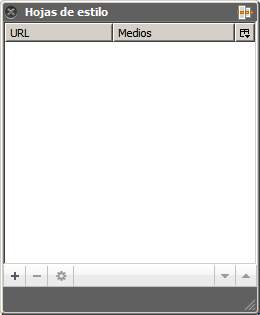
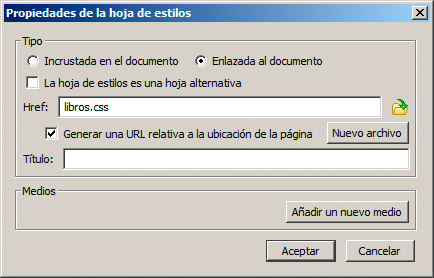
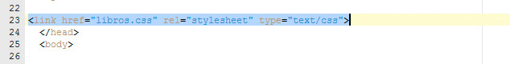
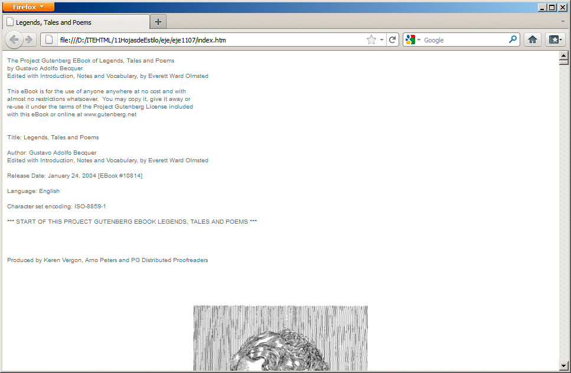

Antes de comenzar a aplicar estilos a un documento, crearemos el espacio necesario para acoger las reglas. Como venimos explicando, lo más apropiado es contar con una hoja de estilos externa; así que eso es lo que haremos.
Crear una hoja de estilos externa
Una hoja de estilos es un un documento de texto que guardamos con extensión .css; no obstante, programas como BlueGriffon nos permiten crear la hoja desde sus diferentes opciones, siguiendo estos pasos:
1. En BlueGriffon abriremos el documento al que le vamos a aplicar formato.
2. En el menú Paneles seleccionaremos la opción Hojas de estilo. Aparece el cuadro de la figura:

3. Haciendo clic en el botón con el signo de suma, en la esquina inferior derecha aparece el cuadro de diálogo de la figura, para añadir una hoja de estilo al documento.

4. Como vamos a crear una hoja externa, seleccionaremos la opción Enlazada al documento y haremos clic en Nuevo archivo. Indicaremos el nombre que le queramos dar a nuestra hoja.
5. Para que no tengamos problemas al subir la página a Internet, activaremos la casilla Generar una URL relativa a la ubicación de la página.
6. Haremos clic en el botón Aceptar.
7. Cerraremos la ventana de estilos.
Con esto hemos terminado. Si miramos el código fuente de la página mediante el botón source, podremos ver el enlace dentro de la cabecera.

La ventana de inserción de estilos merece un análisis más detenido. Con ella podremos hacer todas las operaciones que necesitemos respecto a los estilos:
Es posible, por ejemplo, incorporar varias hojas de estilo diferentes e incluso añadir estilos en el encabezado.
Haciendo clic en el botón Añadir un nuevo medio, podemos establecer hojas de estilos diferentes para impresión, para dispositivos móviles, etc.
En el vídeo siguiente realizamos el proceso habitual de creación de una plantilla externa.
Pregunta Verdadero-Falso
Verdadero Falso
El resultado del trabajo realizado con el vídeo se muestra en la figura:

Con sólo un par de líneas hemos variado la apariencia de la parte inicial del documento y, lo que es más importante, podemos proporcionar ese mismo aspecto a cuantos documentos queramos y modificarlos con sencillez.
Actividad 5
Una vez que los estilos han sido insertados en la página web debemos eliminarlos de la cabecera de nuestras páginas, para evitar estilos duplicados. Los estilos deben permanecer únicamente en el archivo externo y en las páginas sólo tendremos un enlace a ese archivo.